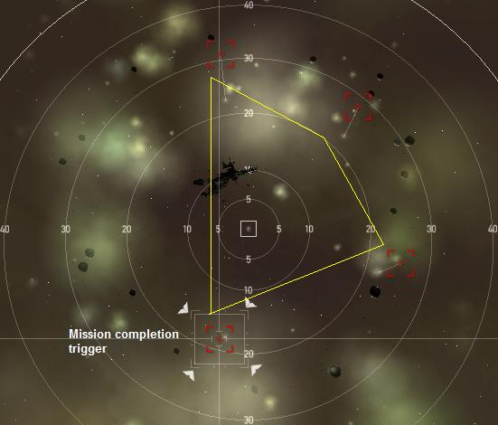

Attack of the Drones, Level 4
Last edited by JoannaDoe
Sat, 19 Dec 2015 10:27 UTC
Sat, 19 Dec 2015 10:27 UTC
Faction: Drones
Mission type: Encounter
Space type: Normal (MWD works)
Damage dealt: Exp/Therm - 2% EM, 35% Thermal, 21% Kinetic, 41% Explosive
Web/scramble: Elite Frigates (any Strain Alvi)
Extras: NA
Recommended damage dealing: EM (best all-round), Thermal (secondary)
Recommended ships: Sleipnir, Raven, Dominix, Abbadon, Drake, Apocalypse
Video: Ishtar blitz, Navy Raven, Dominix , Paladin , Arty Maelstrom
Single Pocket
Auto aggro from Initial Group at warp-in after several seconds.
EACH ship from the Initial Group triggers ONE of the spawns below.
For each ship killed, one Reinforcement Group will be spawned. These spawns may target drones/fleet members.
Important Notes:
- As of october 2014 you may warp in at any range (warp cancel)... and sniper the NPCs away.
- Note the ship type pattern for the four reinforcement groups - frigates / destroyers / cruisers / battlecruisers.
- The ship numbers in a group will randomly vary between 2-3 for each type.
- The mission completion trigger from the initial group is always the closest ship after you had warped in. (This applies as long as you did not use the the warp cancel trick.)
- You can also visually identify the mission completion trigger ship if you zoom out your view. It forms the apex, i.e summit, of the "triangle" formed by the four initial ships.
- Failing to identify the trigger from the initial group, you can always keep an eye out for the Battlecruiser Reinforcement Group spawn.
- Reinforcement groups will target and attack any drones out when they spawn, keep an eye on your drones.

Initial Group (Auto-aggro): (20-28km)
4x Cruisers/Battlecruisers (Bomber Alvum)/(Defeater Alvatis) Trigger (each ship)Frigate Reinforcement Group (Auto-aggro): (23-27km)
2-3x Elite Frigates (Strain Infester/Strain Splinter Alvi) Warp/Scramble2-3x Battleships (Supreme Alvus Parasite/Alvus Ruler)
Destroyer Reinforcement Group (Auto-aggro): (23-27km)
2-3x Destroyers (Predator Alvior/Marauder)2-3x Battleships (Supreme Alvus Parasite/Alvus Ruler)
Cruiser Reinforcement Group (Auto-aggro): (23-27km)
2-3x Cruiser (Nuker Alvum - Bomber Alvum) (Pre-QR in Italics)2-3x Battleships (Supreme Alvus Parasite/Alvus Ruler)
Battlecruiser Reinforcement Group (Auto-aggro): (23-27km)
2-3x Battlecruisers (Striker Alvatis/Enforcer Alvatis - Siege/Defeater Alvatis) (Pre-QR in Italics)2-3x Battleships (Supreme Alvus Parasite/Alvus Ruler)
Tips
- To manage aggro, do not kill the trigger ships all at once. Eliminate an incoming reinforcement group first, before you trigger the next group.
- You may warp-in at any distance : Inititate the first time warp, cancel it and then warp in at your preferred distance.
- The Supreme Alvus Parasite/Alvus Ruler battleships can be sniped or outrun. Their max attack distance is around 35 km, and they move very slowly.
- Mission is flagged completed once all ships from the Battlecruiser Reinforcement Group have been eliminated.
- You do not have to kill all ships for this to be marked complete, just kill the ship circled above and the reinforcement group and the mission will be complete.
Blitz
- Identify and kill the trigger ship which spawns the Battlecruiser Reinforcement Group. This is always the drone in the initial group that spawns closest to the beacon.
- Kill all ships in the Battlecruiser Reinforcement Group.
- No longer Blitzable after Dec 2015 Update, you have to kill all drones to complete the mission.
Bounty
- 8m to 10m (depends on spawns)
- salvage 1,5m loot nothing
Mining
- There are 2.221.119 units of Veldspar to mine.
Ships detail:
| Orbit | Max. Velocity | Shield (HP) | Armor (HP) | Shield Resistances (%) | Armor Resistances (%) | DPS (HP/s) | |||||||||||
|---|---|---|---|---|---|---|---|---|---|---|---|---|---|---|---|---|---|
| EM | EXP | KIN | TM | EM | EXP | KIN | TM | EM | EXP | KIN | TM | ||||||
| 4x | Bomber Alvum | 17,625m | 450m/s | 1600 | 650 | 27 | 57 | 47 | 37 | 27 | 57 | 47 | 37 | - | 20 | - | - |
| 3x | Strain Infester Alvi | 1,800m | 900m/s | 125 | 350 | 19 | 55 | 44 | 32 | 19 | 55 | 44 | 32 | - | 3 | 9 | - |
| 12x | Supreme Alvus Parasite | 33,750m | 350m/s | 3500 | 6500 | 44 | 74 | 64 | 54 | 44 | 74 | 64 | 54 | - | - | 12 | 48 |
| 3x | Predator Alvior | 11,984m | 500m/s | 275 | 650 | 10 | 40 | 30 | 20 | 10 | 40 | 30 | 20 | - | 17 | 5 | - |
| 3x | Nuker Alvum | 16,875m | 450m/s | 1600 | 650 | 29 | 59 | 49 | 39 | 29 | 59 | 49 | 39 | - | 10 | - | - |
| 3x | Striker Alvatis | 5,000m | 400m/s | 1000 | 2000 | 30 | 60 | 50 | 40 | 30 | 60 | 50 | 40 | - | 12 | 42 | - |
| 28 total ships | Averages/Totals | 57,400 | 91,550 | 40 | 70 | 60 | 50 | 41 | 71 | 61 | 51 | - | 206 | 312 | 576 | ||
CategoryMissions
CategoryLevel4
Easy mission for L4 beginners.
B) Yeah, don't think of using explosive damage. That was just useless.
This works for every Encounter btw.
Supreme Alvus Parasite 90hp/s
EM: 0hp/s, Expl: 30hp/s, Kin: 12hp/s, Therm: 48hp/s
Alvus Ruler 128.73hp/s
EM: 24hp/s, Expl: 32.73hp/s, Kin: 48hp/s, Therm: 24hp/s
Siege Alvatis 57hp/s
EM: 0hp/s, Expl: 25hp/s, Kin: 6.40hp/s, Therm: 25.60hp/s
Defeater Alvatis 48.59hp/s
EM: 0hp/s, Expl: 31.09hp/s, Kin: 17.50hp/s, Therm: 0hp/s
Bomber Alvum 39.80hp/s
EM: 0hp/s, Expl: 35.40hp/s, Kin: 4.40hp/s, Therm: 0hp/s
1 Scordite Roid - 49,119 Units
just shoot one then kill its spawn move on to next
http://www.youtube.com/watch?v=CX5fQKmQii4
2x Faction Caldari Amps EM and Therman, 1x V-15 Invul, EM-Missiles and Amarr Heavy and Light Drones for EM-Damage.
Very easy.
regards
Piece of cake with 1xLAR, 2xExp, 1Kin & 1Therm hardeners in an Abaddon.
http://www.youtube.com/watch?v=aCsZlhrCQ7Q
Took several warp-in/warp-outs to finish it after that point.
21 Condensed Alloy
11 Crystal Compound
28 Dark Compound
63 Gleaming Alloy
137 Glossy Compound
53 Lucent Compound
258 Lustering Alloy
296 Motley Compound
22 Opulent Compound
180 Plush Compound
74 Precious Alloy
40 Sheen Compound
Refined without Scrapmetal Reprocessing skill, but high standings and Refining 5:
581,561 Tritanium
151,202 Pyerite
50,496 Mexallon
22,856 Isogen
13,849 Nocxium
397 Megacyte
1815 Zydrine
43 Morphite
Abaddon 8xMMPEB, 4xCR II, DC II, 2xExpl II, 1xKin II, 1xCPR, 1xHS II, 1xLAR II, 3xCCC I
17mil ISK
Warped to 0, no warp-outs, no problems.
Loot: 10.21M
LP: 3885 x 1000 = 3.89M
Reward: 1.72M
Salvage: 0.57M
Bounty: 0M
---
Sum (no salvage): 5.61M
Sum (excl. LP): 12.5M
Sum: 16.39M
Mission (undock - reward): 20 min
Salvage (undock - dock): 10 min
---
Sum: 30 min
Ship: Raven (T2 some faction)
Pilot: 17.35M skill points
ISK/h: 32.78M/h
ISK/h (no salvage): 16.83M/h
ISK/h (blitz): ?
Omni Tank: 1014 (cap stabble, lazy fittings.)
Cruise Missles: 400ps - 130km range.
Drones: 5*Hobgoblin II - 78Dps
(low damage lazy farm ship, aggro full rooms.)
Salvage Ship: Noctis
High slots: 4*Small Tractor Beam I
High slots: 4*Salvager I
Mid slots: Experimental 10MN Afterburner I
Mid slots: Experimental 10MN Microwarpdrive I
Low Slots: 3* Expanded Cargohold II
Rigs: 3* Medium Salvage Tackle I
Cargohold: 3.000m3 +-
Tractor Beam Range: 80km
-----------------------------------
Mission: Attack of the Drones
Mission Time: 22 Minits
Mission LP/Bounty/Reward: 2254LP - 8.6M
Salvage Time: 7 Minits
Salvage Value: 0.3M
em 1% - Expl 62,4% - Kin 13,3% - Therm 23,3%
Take care, it seems to vary alot with what spawns you get.
My fitting for this was as follows:
[Stratios, N7]
Energized Adaptive Nano Membrane II
Medium Armor Repairer II
Armor Thermic Hardener II
Drone Damage Amplifier II
Armor Explosive Hardener II
Omnidirectional Tracking Link I
Cap Recharger II
Cap Recharger II
Cap Recharger II
10MN Y-S8 Compact Afterburner
Focused Modulated Medium Energy Beam I
Focused Modulated Medium Energy Beam I
Focused Modulated Medium Energy Beam I
Focused Modulated Medium Energy Beam I
Drone Link Augmentor I
Medium Nanobot Accelerator I
Medium Anti-Explosive Pump I
Medium Auxiliary Nano Pump I
Curator I x4
Hammerhead I x6
Berserker I x1
Warden I x4
Ogre I x2
Hobgoblin II x5
Microwave M x4
Tracking Speed Script x2
Gamma M x4
Optimal Range Script x1